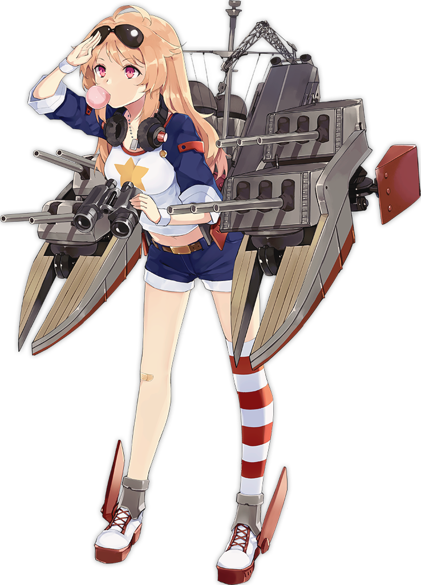

FLEET
Definition
A Fleet is a formed with six ships. The fleet itself is divided into 2 parts which is Escort fleet and Main fleet.
- Escort Fleet : frontline of fleet which include destroyer,light cruiser,and heavy cruiser ship with high DPS main gun and torpedo shell as a weapon to clear a path from enemy.
- Main Fleet : backline of fleet which include battleship,aircraft carrier,and repair ship with burst damage from main gun and aircraft plane swipe away the enemy.
Well,you may ask "Hey, how am I supposed to know which ship can compatible with the other ships to perform best as a fleet?"
For example,I will give you the sample of my entire fleet in the game :
- IJN fleet

- HMS fleet
- ROC fleet

- Low Cost Oil fleet
Quick Tips
As starters or beginners, I'll give you an advice.DONT MIND IT AT ALL which one ship can compatible with other as fleet.Yes, you dont need to overthink or speculate which ship you are going to add into your fleet because your ships in your dockyard are still limited. Just put your strongest ship in dockyard into one fleet and focus on progessing to open new area in the map. Sooner or later your admiral's level will rose and you can build 2 fleets to easily clear a node.
Here is a few tips for beginners that may help you to progress faster build your fleet become stronger in Azur Lane :
- Fodder
Whenever you got a bulk of normal ship in Dockyard NEVER EVER scrap them.It's better use them as fodder to raise stats your main ship.
- Uncap
When you are accomplish weekly task you get a few universal bulin SR and a bulin SSR to raise star cap your ship.It's very important for you to uncap all of your main ship in your fleet as you progressing to open new map unless you determine to use Low Cost Oil Fleet.By uncap them your ship get more stronger and raise the limit of stats so you can give them more fodder than before.▼ ▼ 
- Low Cost Oil Fleet
Low Cost Oil Fleet could be interpreted as grind fleet or farm fleet without sufficient oil cost to sustain the progress of grinding. There are certain class that can be optimize for this build such as :- Fletchers
- Destroyer Division 6's Elite
- 1 cost Normal Ship
- Weekly Gacha
As beginner you should doing a weekly gacha to get a new ship and get a chance to get a SSR ship.It's very important for you to doing this per week because you get a weekly mission to construct 10 ship with reward 6 cube and 2000 gold and you can expand your ship's pool for your fleet.I suggest you to construct 1 light ship each day to clear daily task construct for 6 day a row and construct additional 4 ship in the last day.
Why?
Because by doing this daily task construct you will get a profit 200 gold and zero cost cube for each 1 light ship you construct every 6 day in a row.
1 light ship construct cost 1 cube and 600 gold and each day you get a reward 1 cube and 800 gold.By multiplying reward you will get when you doing this in a 6 days row,you will get 1200 gold with zero cost cube with additional construct 4 ship you can accomplish weekly construct task on the last day.So it's very profitable method for you as starter.Also Do not forget to check what SSR ship you can get by exchange medal points on Exchange Tab because you can scrap R rarity and SR rarity ship you dont want from gacha and turning them into medal points. - Leveling Expedition
ONLY doing this if you want go to sleep or not playing azur lane all day long because you pay 800 oil cost to send 6 ships into leveling expedition that takes 8 hour,so it's pretty long run expedition.By doing this your ship get a ton of EXP points so you can uncap your ship without grind EXP points in certain map.Even this method is very tempting and easy to do,DO NOT use this method too often.Perhaps you doesn't realize the importance of oil as beginner because your fleet cost still low and you have a lot of oil,but when your ship get max level and max cap with SSR rarity it will cost 20 oil just for one ship.As you progressing a harder map or you want farm 1 instances you will need a ton of oil so it's better to use this method periodically. - Map 3-4
You may wondering what's in the map 3-4? and Why ?.Because there are two beautiful foxes are waiting in this map to be tamed by you.The pair of Aircraft Carrier Kaga and Akagi
These two foxes are tier 1 Aircraft Carrier if you get them both and put them in 1 fleet which can be very useful to help you clear next map or farm node.

Source:"https://azurlane.koumakan.jp/Kaga" and https://azurlane.koumakan.jp/Akagi
A few month has been passed...
Congratulations !
You are an Advaced Player now.
It's time you can feel the power of supreme from droppable meta ship on map 9,10,11 and 12.
Droppable Ship Girl
Doesn't matter how much your money in your credit card to buy gold and cube for gacha there are ship girl that CAN ONLY BE OBTAINED FROM DROP REWARD on certain map like Kaga and Akagi.
These ship girl will help you to become supreme commander and surpass other player progress both in PvE and PvP.Here below is list of droppable ship girl that you should be notice :
- Nicholas
Nicholas is USS Destroyer ship type from Fletcher Class that can be obtain from map 9-3.This ship is good when it's paired with USS helena because it's retrofit support skill to heal helena 8% of helena's max health.Default Retrofit 
- Niizuki
Niizuki is IJN Destroyer ship type from Akizuki class that can be obtain from map 9-4.I would say Niizuki is cleveland version of IJN that would fit so well with other barrage DPS focusing ship in IJN. - Jintsuu
Jintsuu is IJN Light Cruiser ship type from Sendai Class that can be obtain from map 10-4.This ship included in BROKEN TIER LIST SHIP because her skill,which is Splendid 2nd Torpedo Squardon to increases reload and torpedo stat for all CL and DD in the same fleet by 5%(20%) and Unyielding Beast(Retrofit) to Decreases damage taken to self by 20%. While alive in fleet, increases torpedo critical hit chance for all CL and DD in the same fleet by 4% (10%.) Starting from level 6 of the skill, also increases torpedo critical hit damage by 5% (30%).Pairing this ship with other DD on IJN such as Ayanami,Kawakaze,and Yukikaze is unbelivably good or you can pair it with other CL on IJN such as Niizuki an Sendai,it's depend your choice and gamestyle.Default Retrofit - Sendai
Sendai is IJN Light Cruiser ship type from Sendai Class that can be obtain from map 11-3.If you already have Jintsuu,you can pair this ship in one fleet with her for PvE or PvP purposes.What makes Sendai compatible with Jintsuu is her skill which is Torpedo Fleet to increases reload and torpedo stat for all CL and DD in the same fleet and Flare(Retrofit) to decrease evasion rate of enemy's fleet by 25% after 10 seconds battle begins also every 20s activate after first skill initiate.Default Retrofit - Columbia
Columbia is Light Cruiser ship type from Cleveland Class that can be obtain from map 11-4.She is the second ship of the Cleveland class and the sister of USS Cleveland.Her skills is pretty same as USS Cleveland with addition Flagship Protection to Reduces the damage taken by the Flagship by 15%(25%).Default 
| Default |
|---|